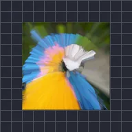

خطوط التكبير

ينشئ خطوطًا تندفع من نقطة بتكبير نسخ من الطبقة حولها والاحتفاظ بأكثر البكسلات سطوعًا. يعطي المتوسط ضبابية تكبير. ويحدد R وG وB وA لكل قناة الاحتفاظ بأدنى قيمة أو أعلى قيمة أو المتوسط أو ترك القناة دون تغيير.
الإعدادات
| الإعداد | النوع | النطاق | الافتراضي |
|---|---|---|---|
| المركز | نقطة (X, Y) | من -1 إلى 2 | 0.5, 0.5 |
| القوة | رقم | من 0 إلى 1 | 0.15 |
| ألفا | رقم | من 0% إلى 100% | 100% |
| الانحياز | رقم | من -100% إلى 100% | 0% |
| R | اختيار | أدنى، أقصى، متوسط، إيقاف | أقصى |
| G | اختيار | أدنى، أقصى، متوسط، إيقاف | أقصى |
| B | اختيار | أدنى، أقصى، متوسط، إيقاف | أقصى |
| A | اختيار | أدنى، أقصى، متوسط، إيقاف | أقصى |